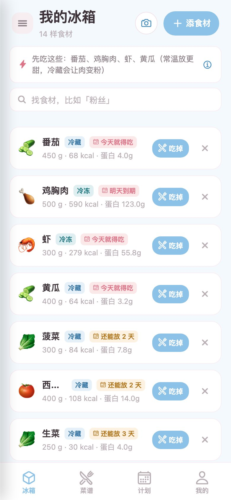
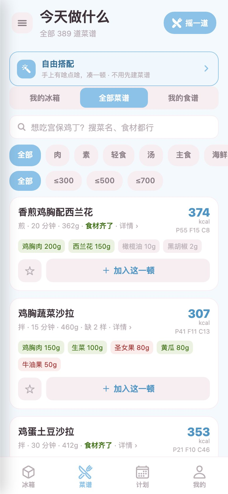
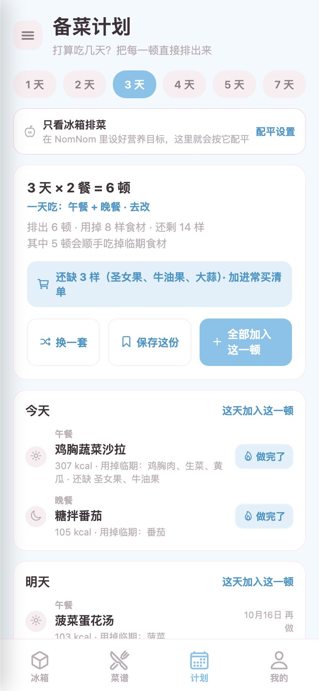
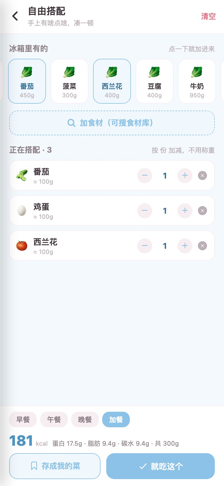

— 一本会提醒你的冰箱账本 —
不只是记库存，是把菜吃完的每一件小事
从添食材到排出一周三餐，让「买回来的」都变成「吃进肚子的」。
最快入库
🗣
像说话一样记
「苹果150g 半斤菠菜 两个鸡蛋」——像发消息一样写一句，自动认出食材、拆好克数、标好保质期。
会拆「半斤」「两个」，不用查单位
连打字都省
📸
拍照入库
拍一张食材、或直接拍购物小票，AI 认出每一样，确认一下就进冰箱。小票上的品牌货也能认。
拍食材 / 拍小票两种姿势⏰
先坏先吃
快过期的自动排到最上面，红色的「今天就得吃」一眼看到；每天早上还会推一条系统通知提醒你。
临期置顶 · 每日提醒推送🍱
备菜计划
「打算吃几天？」——389 道家常菜直接把每一顿排出来：优先吃临期的、不重复、还能按热量目标配平。
排出即扣库存，做完一键打卡🤲
自由搭配
手上有啥点啥，不用先建菜谱：点几样食材，当场凑出一顿，热量营养立刻算好。
冰箱优先 · 现凑现算📊
不浪费周报
这周做了几顿、吃掉多少样、扔掉几样——「不浪费率」告诉你：这个家的冰箱，正在被认真吃完。
做过的饭都有数入库，只要 一句话
不用翻分类、不用填表单，像跟家人报账一样就行。
🛒
说一句
买菜回家顺手写：「苹果150g 半斤菠菜 两个鸡蛋」，或者直接拍一张小票。
🧊
进冰箱
AI 拆好名字和克数，保质期自动算好。冰箱按「先坏先吃」排，临期永远在最上面。
🍽
安排着吃
备菜计划替你把每顿排好，顺手消耗临期；吃完点一下「吃掉」，周报里就不浪费率 +1。
长这个样子，点开看大图
全部是网页版的真实界面截图。




把冰箱交给它，先坏的先吃
网页版即刻可用；手机 App 正在路上。
🍎
iPhone
即将上架拍小票入库、临期系统推送——iPhone 版正在路上。
在 App Store 获取MiseMise · 即将推出
🤖
Android
筹备中安卓版已在规划，先用网页版把冰箱管起来。
在 Google Play 获取MiseMise · 即将推出
常常被问到
保质期是怎么定的？准吗？
每种食材都带了一份保鲜知识库：冷藏/冷冻/常温的推荐放法、能放几天、以及一条「这样放更久」的小贴士。你改了入库日期，倒计时会跟着变。它是参考，不是判决——真坏没坏，鼻子说了算。
389 道菜谱是怎么来的？
内置了一套家常菜谱库（每道都带热量、宏量营养、主要食材和做法）。备菜计划从里面挑：优先吃你冰箱里临期的、最近三顿不重样、还想吃的热量目标配平。自己的菜谱可以随手建，建好 nomnom 里也能用。
拍照入库能认出什么？
两种姿势：拍食材——一桌子菜拍一张，逐样认；拍小票——超市小票拍一张，逐行认，连品牌包装食品都能认出来。认不出的会标出来让你补一句，不会默默丢掉。
临期提醒是每天都有吗？
每天到点检查一次冰箱：有临期才推，没临期一条都不打扰。提醒时间可以在设置里调。
和 nomnom 是什么关系？要分开注册吗？
同一个账号体系：登录 nomnom 的账号，食谱、营养目标、「吃掉同步」都会自动接上。不登录也能用——游客模式下冰箱数据只存在你自己的设备上。
MiseMise 收费吗？
冰箱记账、临期提醒、备菜计划、周报，这些核心功能全部免费。它的使命是让你少扔菜——扔掉的食物比它值钱多了。